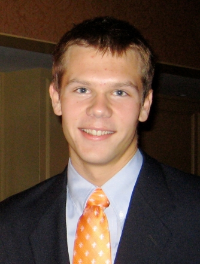

I am a third year graduate student seeking my Ph.D. at the Harvard-Smithsonian Center for Astrophysics. I am working with Sean Andrews to study protoplanetary disks with radio interferometers such as the Submillimeter Array (SMA) and the Atacama Large Millimeter Array (ALMA). My thesis work also involves optical/IR photometry and spectroscopy to learn more about the physics of star and planet formation.
For my masters project, I worked with Edo Berger and Time-Domain Research Group to spectroscopically classify optical transients found with Pan-STARRS. In 2012, I completed my research exam (paper here) and am now a qualified Ph.D. candidate. In summer 2012, I helped commission the new Wavefront Sensor Camera on the MMT.
In 2010 I graduated from the University of Virginia with degrees in Aerospace Engineering and Astronomy. There, I worked with Kelsey Johnson on an engineering study of ALMA and with Richard Bradley on the PAPER project. In 2009, I again worked with Sean Andrews as a SAO REU Intern on circumstellar disks around multiple star systems.
In 2010, along with several graduate students at Harvard, I helped co-found Astrobites, a "readers digest" of arXiv/astro-ph. I also enjoy helping students with science fair projects, giving public talks, and guiding undergraduates in their observing projects. In fall 2012, I was teaching fellow for Professor Daniel Eisenstein's AY 17, a Harvard undergraduate course focusing on galaxies and cosmology. This spring 2013, I was a teaching fellow for Professor James Moran's AY 193 course on Noise and Data Analysis in Astrophysics, where I delivered two lectures on Bayesian parameter estimation, to be posted soon!
Besides astronomy (which is always fun), I enjoy being active outdoors. In summer 2010--right before starting graduate school--I rode my bicycle with my friends from Los Angeles, CA to Vancouver, BC, camping all along the Pacific Coast. Now that I'm in Boston, I've taken to running to explore the city and the great Charles River. I enjoy running marathons; including the 2012 Astromarathon. In August 2013, I'll be competing in a 50 mile trail race in Medfield, MA.